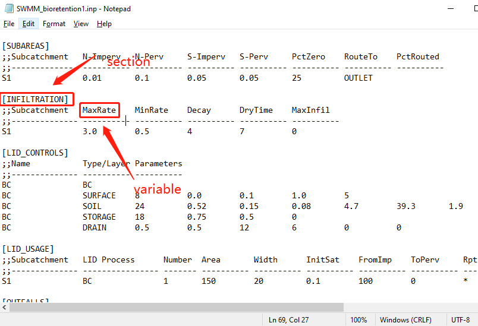
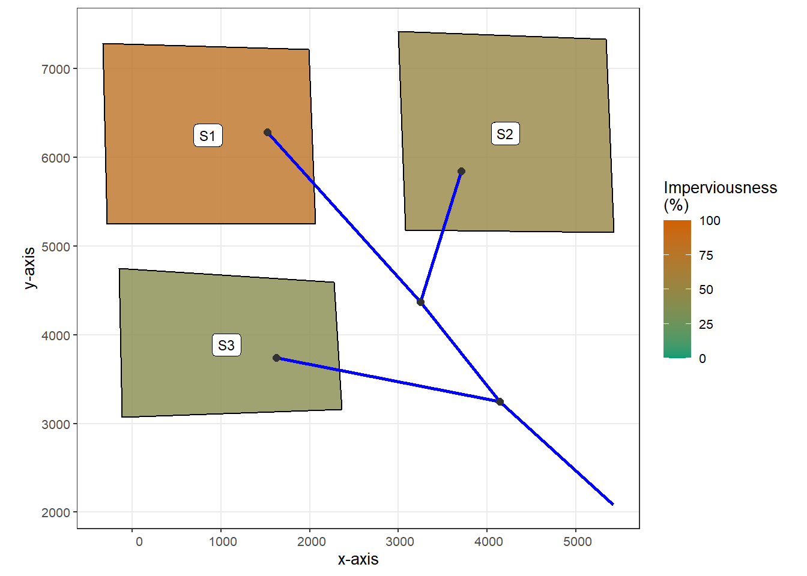
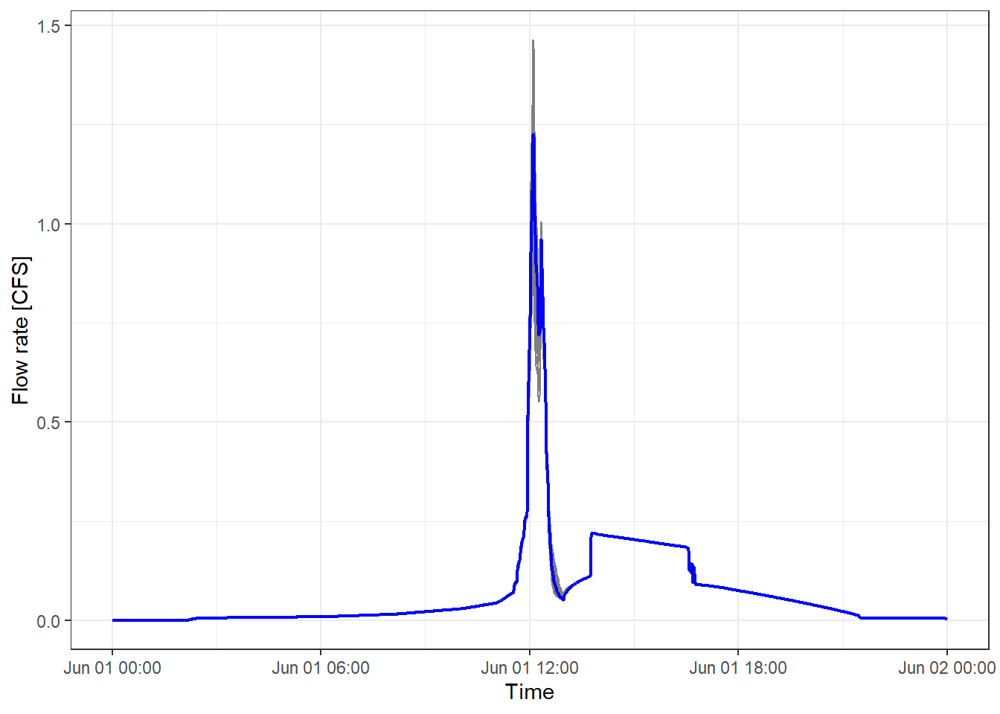

In this example, the function to modify subcatchment parameters after modeling GIs externally is explored. Additional changes to the catchment can be passed to the modify_inp function through the GI_plan variable, where the tibble columns with the names in the format of section_variable are defined. The “section” term corresponds to the name of the tab used in swmm input files, such as the INFILTRATION tab; the infiltration parameters are store under this tab. The “variable” term corresponds to the name of the variable, e.g., “MaxRate” corresponds to the maximum infiltration rate (see the figure below). Thus, the column can be named as “INFILTRATION_MaxRate”, and different values can be assigned to the column to reflect the changes to subcatchment parameters after installing the GIs, that produce outflow as specified in the inflow_path column (see example 1 for more explanations).

The goal of this example is to show the consequences of changing subcatchment width after modeling bioretention cells and their controlled areas externally.
The catchment studied in this example is the same as in example 2. It has three subcatchments, as shown in the figure below.
# Load toolbox functions
source("interface_functions.R")
inp <- read_inp("./example/example3/raw_catchment.inp")
# Functions provided in swmmr are used for visualization
sub_sf <- subcatchments_to_sf(inp)
lin_sf <- links_to_sf(inp)
jun_sf <- junctions_to_sf(inp)
rg_sf <- raingages_to_sf(inp)
lab_coord <- sub_sf %>%
sf::st_centroid() %>%
sf::st_coordinates() %>%
tibble::as_tibble()
lab_rg_coord <- rg_sf %>%
{sf::st_coordinates(.) + 500} %>% # add offset
tibble::as_tibble()
sub_sf <- dplyr::bind_cols(sub_sf, lab_coord)
rg_sf <- dplyr::bind_cols(rg_sf, lab_rg_coord)
ggplot() +
# first plot the subcatchment and color continuously by Area
geom_sf(data = sub_sf, aes(fill = Perc_Imperv), color = "black", alpha = 0.8) +
scale_fill_gradient(low = "lightgreen", high = "indianred4") +
geom_sf(data = lin_sf, colour = "blue", size = 1) +
geom_sf(data = jun_sf, colour = "grey20", size = 2) +
geom_label(data = sub_sf, aes(X, Y, label = Name), size = 3) +
labs(x = "x-axis",
y = "y-axis",
fill = "Imperviousness\n(%)") +
scale_fill_gradient(limits = c(0,100), low = "#009E73", high = "#D16103") +
theme_bw(base_size = 10)
Three units of bioretention cells are assumed to be implemented in each subcatchments. The design option 2 in example 2 is used, which corresponds to the outflow hydrograph stored in file bc2_outflow.txt.
The following code chunk creates multiple tibbles stored in a list. Each tibble corresponds to a bioretention cell implementation strategy, and for each scenario, the subcatchment width of the subcatchments is set to a random value between 30 and 500, and Manning’s n of the impervious areas of the subcatchment is set to a random value between 0.01 and 0.02. Manning’s n is a measure of surface roughness. Multiple random generated strategies are evaluated to assess the consequences of changing these parameters. The information on catchment width is provided in the width_adj column, and on Manning’s n is provided in the SUBAREAS_N-Imperv column.
set.seed(10)
inflow_path <- paste0("./example/example3/bc", 2, "_outflow.txt")
N = 50 # Number of scenarios
gi_plans <- vector("list", 10) # list storing the random GI install plan
for (i in 1:N){
gi_plans[[i]] <- tibble(
inflow_path = rep(inflow_path, 9),
outlet = rep(0, 9),
subcatchment_name = rep(c("S1", "S2", "S3"), each = 3),
per_area_rep = rep(0, 9),
imp_area_rep = rep(0.1, 9),
width_adj = rep(runif(3, min = 30, max = 500), each = 3),
`SUBAREAS_N-Imperv` = rep(runif(3, min = 0.01, max = 0.02), each = 3)
)
}The scenarios are evaluated using the write_routing_interface_file and modify_inp functions provided by the toolbox and the swmmr functions.
read_outflow <- function(fpath = "outflow.txt"){
# Purpose: read simulated outflow hydrograph
# Input:
# fpath = file path of the simulated outflow, which is defined in the [FILES] tab in SWMM input file
# Output:
# a tibble stores the outflow hydrograph
read_table(fpath, skip = 7) %>%
transmute(datetime = ymd_hms(paste(Year, Mon, Day, Hr, Min, Sec)),
flow = FLOW) %>%
arrange(datetime)
}
# Read the SWMM input file for the original subcatchment
inp <- read_inp("./example/example3/raw_catchment.inp")
# Create a list to store the simulated outflow hydrographs
outflows <- vector("list", N)
for (i in 1:N){
# create a routing interface file
gi_plan <- gi_plans[[i]]
routing_interface_path <- "./example/example3/routing_interface.txt"
write_routing_interface_file(
GI_plan = gi_plan,
inp = inp,
routing_interface_path = routing_interface_path
)
# modify the object associated with SWMM input file
new_inp <- modify_inp(
GI_plan = gi_plan,
inp = inp,
routing_interface_path = routing_interface_path
)
# write the new SWMM input file
new_inp_path <- "./example/example3/test.inp"
write_inp(new_inp, file = new_inp_path)
# run simulation
run_swmm(new_inp_path)
# get simulated outflow hydrograph
outflows[[i]] <- read_outflow() %>%
mutate(case = i)
}
# join the simulated hydrograph into a single tibble
outflows <- outflows %>%
bind_rows()The following code generates a figure comparing the hydrographs generated in each scenario. The grey lines correspond to the results for each scenario, and the blue line shows the mean values. Considerable variations between different hydrographs can be observed, especially in the predicted peak flows.
# Keep data for relatively high flow periods
data_plot <- outflows %>%
filter(datetime <= ymd_hm("2020-06-02 00:00"))
# Get the mean hydrograph of all the scenarios
data_plot2 <- outflows %>%
filter(datetime <= ymd_hm("2020-06-02 00:00")) %>%
group_by(datetime) %>%
mutate(mean_flow = mean(flow)) %>%
ungroup()
# Plotting
ggplot() +
geom_line(data = data_plot, aes(datetime, flow, group = case), color = "grey50", size = 0.5) +
geom_line(data = data_plot2, aes(datetime, mean_flow), color = "blue", size = 0.8) +
labs(x = "Time",
y = "Flow rate [CFS]") +
theme_bw()